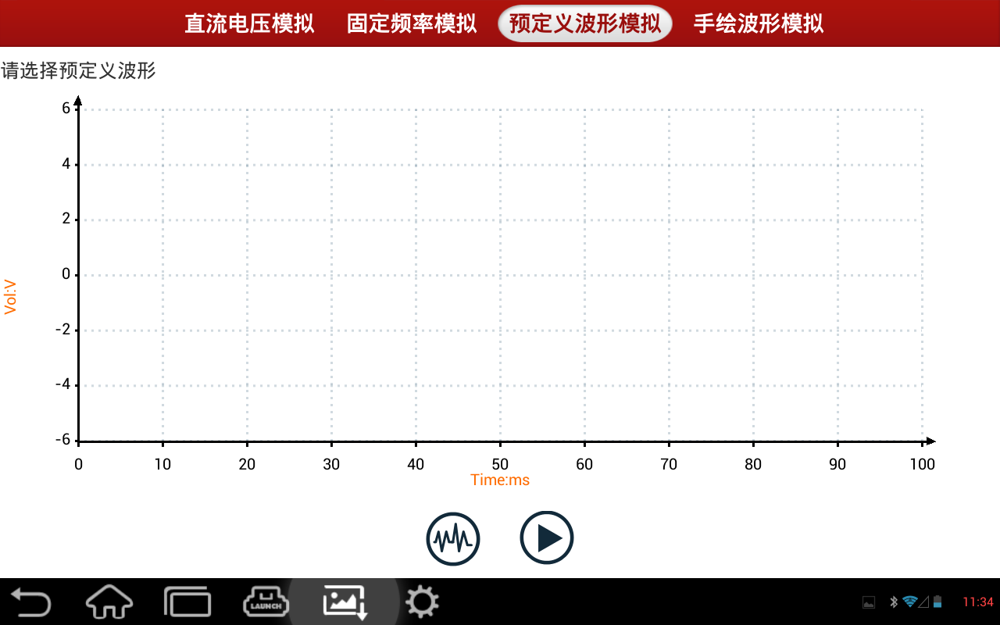

为了方便用户进行传感器信号模拟，提供已经定义好的常见的传感器波形，只要调出预定义波形（选择下方左边“选择波形”按钮，进入选择预定义波形选择界面，依次选择“传感器类型”、“波形类型”后，点击选择波形键后，网格将显示所要模拟的波形），点击“开始”就可以模拟相应传感器的波形输出，用户无需设定所要模拟的波形的参数，网格上方文本显示当前设置的模拟波形名称.如“预定义波形模拟”界面。
|  |
选择波形：点击该键，弹出传感器选择和波形选择窗口中选择所要模拟的传感器类型和波形类型
开始（停止）：开始或停止预定义波形模拟输出。